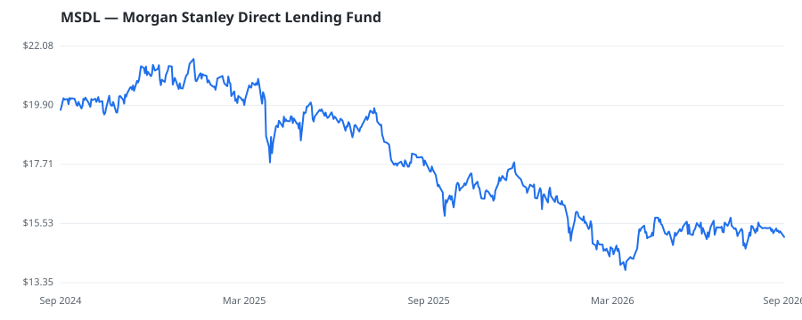

bullish · bearish · n/a — dots: price>SMA10 · SMA10>SMA50 · SMA50>SMA200 · up>down volume (20d)
Other · small cap

Morgan Stanley Direct Lending Fund is a fund whose investment objective is to achieve attractive risk-adjusted returns via current income and to a lesser extent, capital appreciation by investing predominantly in directly originated senior secured term loans issued by U.S. middle-market companies backed by private equity sponsors. It invests predominantly in directly originated senior secured term loans including first lien senior secured term loans including unitranche loans and second lien senior secured term loans, with the balance of the investments expected to be in higher-yielding assets · website
| Revenue | $178.8M | Net income | $122.1M |
|---|---|---|---|
| Operating income | — | Diluted EPS | $1.40 |
| Assets | $3.9B | Equity | $1.7B |
🛒 Newly buying: Lunate Capital Ltd (+99%, 8.5% of book)
| Fund | Fund alpha vs SPY | Position | % of book |
|---|---|---|---|
| Lunate Capital Ltd | +99% | $17M | 8.5% |
| Adams Asset Advisors, LLC | +10% | $2M | 0.3% |
Hedge data: SEC EDGAR 13F · ranked funds beat SPY in >50% of their quarters · fund alpha = mirror-portfolio return minus SPY.